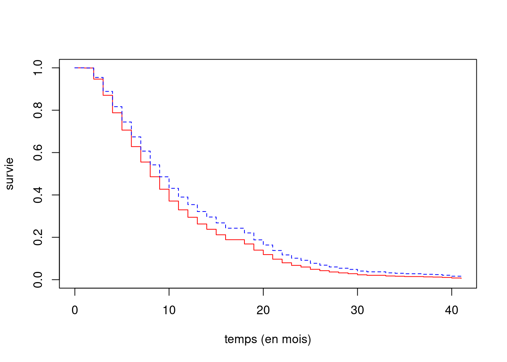

Fotopoulos & Louri (2000) considèrent les facteurs de risque pour les nouvelles compagnies manufacturières en Grèce établies entre 1982 et 1984. Utilisez le Tableau 1 de l’article pour pour répondre aux questions suivantes:
Quel type de mécanisme de censure est présent dans ces données?
Censure par intervalle (nombre connu à une année près, seule l’année du début d’activités et le nombre de bilans sont connus des auteurs) et censure à droite (certaines firmes sont encore en activité en 1992 à la fin de la période de collecte de données).
On pourrait ignorer la censure par intervalle en associant chaque intervalle de la forme \([t, t+1)\) à la valeur \(t\).
Donnez une estimation de la probabilité qu’une entreprise survive trois ans et plus.
On veut la survie \(\Pr(T \geq 3)\) L’estimation est donnée dans la colonne Cumulative survival rate du Tableau 1, soit 0.6393.
Donnez une estimation de la probabilité qu’une entreprise survive entre 4 et 5 ans, soit l’intervalle [4,5) ans.
Puisque la fonction de survie empirique est constante, cela revient à la probabilité de défaillance dans l’intervalle [4,5) ans, soit \[\begin{align*}
\Pr\{T \in [4,5)\} &= \Pr(T \ge 5) - \Pr(T \ge 4) \\&= 0.5525 - 0.5023 \\&= 0.0502.
\end{align*}\] Si on traçait la courbe de Kaplan–Meier, cette probabilité correspond à la hauteur de la contre-marche entre 4 et 5 ans.
Quel pourcentage des observations sont censurées?
Il y a 219 observations au total et \(38=13+25\) firmes sont toujours en activité et donc leur temps de survie est censuré; le pourcentage est 38/219 ou 17.35%.
Êtes-vous en mesure de nous fournir une estimation du troisième quartile de la fonction de survie? Justifiez votre réponse.
Non, puisque les plus grandes temps observés sont censurées et l’estimation de la fonction de survie s’arrête à 0.2921; la fonction de survie ne traverse pas la valeur horizontale de 0.25
Le Tableau 3 de l’article fournit les estimations d’un modèle à risques proportionnels de Cox.
Comparez les modèles (1) et (2). Est-ce que l’effet de cohorte impacte la survie?
Oui. On peut voir cela de plusieurs façons puisque (1) les deux coefficients associés sont significativement différents de zéro (tests de Wald) avec, pour COHORT_82, \(Z = -0.5518/0.2081=-2.651\) et une valeur-\(p\) basée sur l’approximation normale de 0.008 (idem pour COHORT_83).
On peut aussi construire une statistique du rapport de vraisemblance avec \[-2\ell_{(1)} + 2 \ell_{(2)} =1503.442-1471.353 = 32.089.\] Or, l’inclusion des cohortes ajoute deux paramètres, donc cette statistique est à comparer avec une loi \(\chi^2_2\).
Code
# Test de Wald: beta_cohort82 = 02*pnorm(-0.5518/0.2081)
[1] 0.008010906
Code
# Test de Wald: beta_cohort83 = 02*pnorm(-0.5464/0.2021)
[1] 0.006859031
Code
# Test de rapport de vraisemblancepchisq(1503.442-1471.353, df =2, lower.tail =FALSE)
[1] 1.076371e-07
Pour le modèle (3), décrivez le plus précisément possible l’effet des variables capital (FIXED_ASSET) et le montant de la dette (DEBT) sur la durée de vie des entreprises.
Toute chose étant égale par ailleurs, une augmentation du ratio du passif total sur le total des actifs (DEBT) de 1 augmente le risque de 119.3%; le rapport de risque étant multiplié par \(\exp(0.83)=2.293\).
Ceteris paribus, une augmentation du ratio des immobilisations sur le total des actifs de 1 diminue le risque d’environ 59.8%, avec un rapport de risque de \(\exp(-0.9091) =0.4028\).
Exercice 5.2
Un commerce de chaussures de Montréal veut optimiser son inventaire afin de maximiser ses profits et fait appel à votre société de conseil. La base de données chaussures contient des observations fictives et les variables suivantes:
statut: variable catégorielle, 0 s’il est vendu, 1 si l’article est toujours en stock, 2 s’il est déstocké (les modèles invendus après 40 mois en magasins sont passés aux pertes et profits).
temps: temps de stockage de l’article (en mois).
prix: prix de vente réelle de l’article (avec rabais si applicable), arrondi à l’unité près.
sexe: variable catégorielle, 0 pour modèle pour homme, 1 pour femme.
Notre objectif premier est d’estimer le temps qu’un article passe en stock avant d’être vendu.
Que représente la censure dans cet exemple?
Les données censurées à droites correspondent aux paires de chaussure qui sont toujours en stock à la fin de la période d’observation ou qui sont invendues après 40 mois.
Estimez le temps de stockage à l’aide d’un modèle de Kaplan–Meier et rapportez les estimés des quartiles.
On note d’abord que la colonne temps début à 1, ce qui indique que les chaussures sont vendues dans le premier mois. Un temps de \(t\) mois correspond à la plage \([t-1, t)\) mois en stock.
Les quartiles sont 5 mois (25% des chaussures sont en inventaire moins de ce temps), 8 mois (temps médian en stock) et 12 mois (75% des chaussures sont vendues dans l’année de leur achat).
Ajustez un modèle à risque proportionnel de Cox pour la durée de stockage en fonction du sexe et du prix de vente.
Rapportez et interprétez les coefficients des variables.
Call:
coxph(formula = Surv(time = temps, event = statut == 0) ~ sexe +
prix, data = chaussures)
n= 6807, number of events= 5880
coef exp(coef) se(coef) z Pr(>|z|)
sexe -0.1640023 0.8487400 0.0262256 -6.254 4.01e-10 ***
prix -0.0135855 0.9865064 0.0009587 -14.170 < 2e-16 ***
---
Signif. codes: 0 '***' 0.001 '**' 0.01 '*' 0.05 '.' 0.1 ' ' 1
exp(coef) exp(-coef) lower .95 upper .95
sexe 0.8487 1.178 0.8062 0.8935
prix 0.9865 1.014 0.9847 0.9884
Concordance= 0.589 (se = 0.005 )
Likelihood ratio test= 247.8 on 2 df, p=<2e-16
Wald test = 239.1 on 2 df, p=<2e-16
Score (logrank) test = 238.9 on 2 df, p=<2e-16
Chaque augmentation du prix d’un dollar mène à une diminution de risque de vente de 1.35%. De manière équivalente, une augmentation d’un dollar multiplie le risque par 0.9865, soit une diminution de 12.7% pour une différence de prix de 10$. Cet effet est significativement différent de zéro (statistique de Wald de \(z = -14.17\), valeur-\(p\) négligeable).
Pour une paire de chaussure du même prix, le risque de vendre la paire de chaussures pour femmes est de 15.13% inférieur à celui d’une paire pour hommes. Cette différence est significative à niveau 1% (statistique de Wald \(z=-6.254\)). Les souliers pour femmes restent plus longtemps en stock que ceux des hommes au même prix.
Tracez les estimés des courbes de survie d’une chaussure de l’année dont le prix de vente est 120$ pour les modèles pour homme et pour femme.
Code
# Nouvelle base de données avec profil des chaussuresndb <-data.frame(sexe =c(0, 1),prix =rep(120, 2))# Obtention des prédictions de la surviepred <-survfit(modcox, newdata = ndb, type ="kaplan-meier")# Graphique R de basedes prédictionsplot(pred, col =c("red", "blue"), # couleurlty =1:2, # type de lignexlab ="temps (en mois)", #axe des abcissesylab ="survie") #axe des ordonnées

Figure 1: Estimé de la fonction de survie pour une paire de chaussure de 120$ pour hommes (traits pleins rouges) et femme (traitillé bleu)
On vous informe que, pour éliminer les invendus lors de l’arrivée de nouveaux modèles, l’entreprise offre une réduction de 20% après 15 mois.
Ajustez un modèle de Cox qui prendra en compte cette nouvelle information. Rapportez les estimés des paramètres de votre modèle; est-ce que vos interprétations changent?
Pour ce faire il faut modifier la base de données et casser la contribution en deux selon que le temps soit supérieur à 15 mois ou pas.
On obtient donc une plage de \((0,t]\) pour les chaussures vendues en dessous de 15 mois (aucun changement).
Pour les chaussures mises au rabais on a une plage de \((0, 15]\) avec censure à droite (dans chaussure1 ci dessous) et finalement \((15,t]\) avec l’événement pour les autres chaussures (chaussures2).
Call:
coxph(formula = Surv(time = temps0, time2 = temps, event = statut ==
0) ~ sexe + prix, data = dplyr::full_join(chaussures1, chaussures2))
n= 7553, number of events= 5880
coef exp(coef) se(coef) z Pr(>|z|)
sexe -0.116920 0.889657 0.026250 -4.454 8.43e-06 ***
prix -0.042049 0.958823 0.001034 -40.665 < 2e-16 ***
---
Signif. codes: 0 '***' 0.001 '**' 0.01 '*' 0.05 '.' 0.1 ' ' 1
exp(coef) exp(-coef) lower .95 upper .95
sexe 0.8897 1.124 0.8450 0.9366
prix 0.9588 1.043 0.9569 0.9608
Concordance= 0.675 (se = 0.004 )
Likelihood ratio test= 1922 on 2 df, p=<2e-16
Wald test = 1686 on 2 df, p=<2e-16
Score (logrank) test = 1683 on 2 df, p=<2e-16
La différence est à peine perceptible, une différence de quatres chiffres après la virgule pour \(\exp(\widehat{\beta}_{\text{prix}})\). Les coefficients sont toujours significatifs.
On pourrait considérer un modèle à risque non-proportionnels contenant une interaction entre le prix et le temps de manière à ajuster le même modèle. Expliquez comment cela pourrait être fait de manière à obtenir les mêmes estimés des paramètres.
On peut ajuster un modèle à risque non-proportionnel avec le terme \[\texttt{tprix} = \texttt{prix} -0.2\texttt{prix}\mathrm{I}(t > 15),\] avec le modèle de Cox \[\begin{align*}
h(t; \texttt{sexe}, \texttt{prix}) = h_0(t) \exp \left\{\beta_{\texttt{sexe}}\texttt{sexe} + \beta_{\texttt{tprix}} \texttt{tprix}\right\}.
\end{align*}\] Notez que, si on inclut \(\texttt{prix}\) et un terme d’interaction, on se retrouverait avec deux coefficients pour le prix plutôt qu’un seul.
Fotopoulos, G., & Louri, H. (2000). Determinants of hazard confronting new entry: Does financial structure matter? Review of Industrial Organization, 17(3), 285–300. https://doi.org/10.1023/A:1007862922531